Analyse informatique - présentation
% Analyse informatique % Division des enseignements en informatique % janvier 2017
Introduction
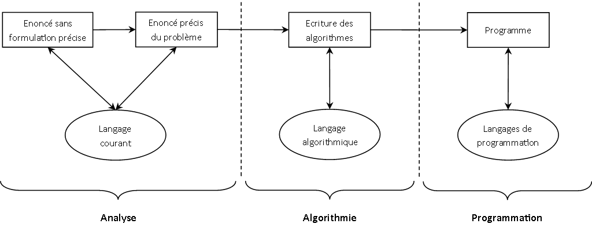
Motivations
- Pas d'usure des logiciels
- Erreurs humaines uniquement
- Obsolescence d'un logiciel causée par
- des logiciels plus performants
- de nouveaux usages
Quelques chiffres
- Coût d'un logiciel :
- maintenance = 53%
- correction bogues = 17%
Quelques chiffres
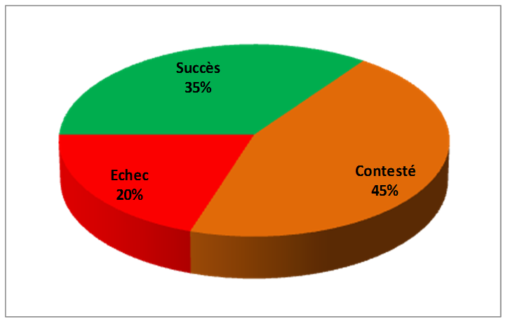
Le besoin
- Outils d'aide à la modélisation pour :
- élaborer la structure des programmes
- s'assurer que les exigences initiales ont bien été respectées
- maintenir les logiciels
Le programme
- Programmation orientée objet
- Présentation d'UML
- Etude de plusieurs diagrammes UML
- Cycles de développement
Organisation
- 4 séances de 3h
- projet à faire à la maison
Programmation orientée objet
Paradigmes de programmation
- Plusieurs manière de programmer
- programmation impérative : suite d'instructions
- programmation fonctionnelle : composition de fonctions
- programmation orientée objet : définition d'interactions entre structures d'objets
- ...
Programmation fonctionnelle
- Apparition dans les années 1960
- Programme découpé en fonctions, elles-mêmes découpées en sous-fonctions...
- Approche descendante
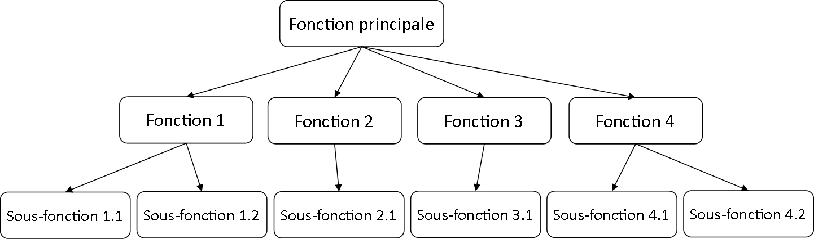
Exemple
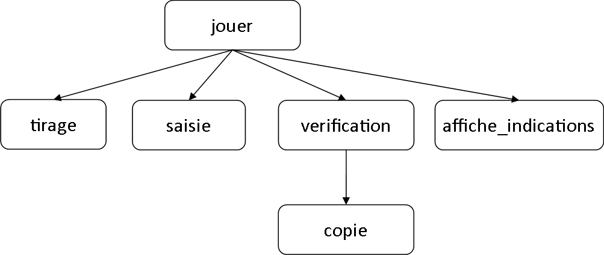
Limites de la programmation fonctionnelle
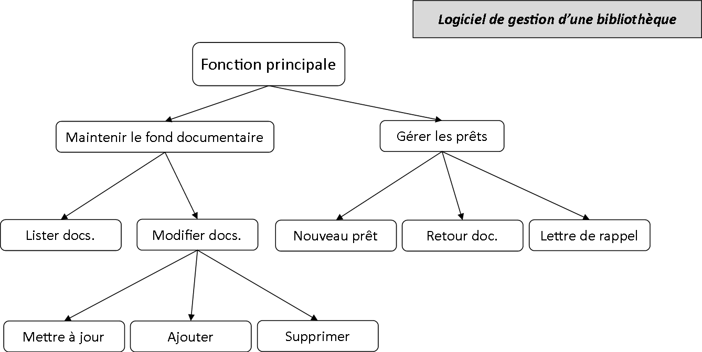
Limites de la programmation fonctionnelle
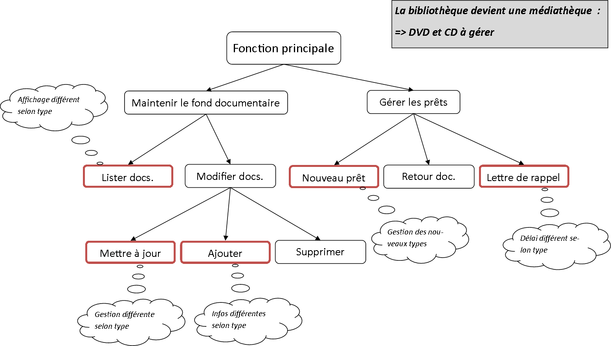
Programmation orientée objet
- Développement dans les années 1980
- Décrit les structures de base du système et leurs interactions
- Approche ascendante
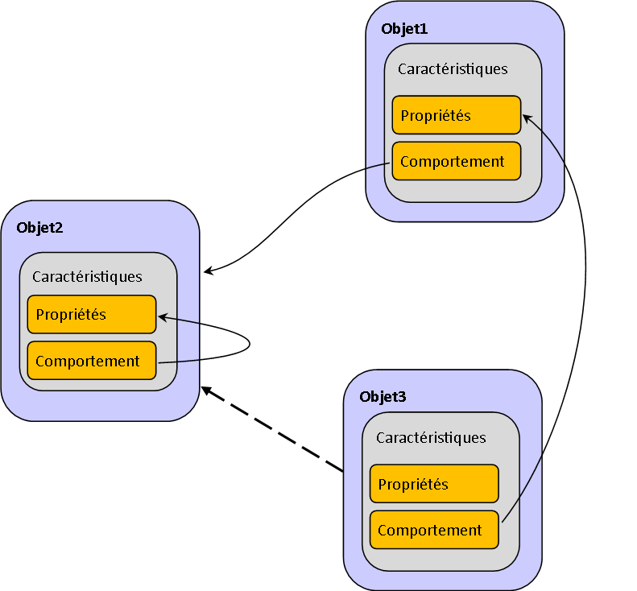
Exemple
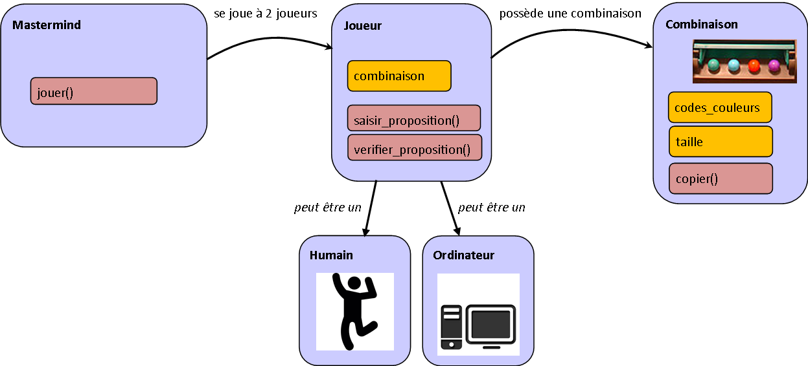
Fonctionnel vs. Orienté objet
- Approche fonctionnelle plus intuitive
- Approche objet facilement réutilisable et maintenable
- Résolvent les mêmes problèmes
Concepts de l'orienté objet - l'objet
Objet : entité autonome, aux frontières précises, décrit par une collection de propriétés et de traitements associés
- Un objet possède une identité, un nom
- Un ensemble d'attributs caractérisent l'état de l'objet
- Un ensemble d'opérations en définit le comportement
Exemples d'objets
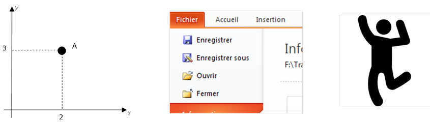
Concepts de l'orienté objet - la classe
Classe : type abstrait de donnée destiné à décrire une structure d'objets, caractérisé par des attributs et des méthodes
- Objet créé selon le modèle d'une classe
- Objet = instance de classe
Exemples de classes
- Point
- Bouton
- Personne
Concepts de l'orienté objet - l'encapsulation
Encapsulation : concept qui consiste à masquer les détails de l'implémentation d'un objet à son utilisateur
- Partie visible de l'objet appelée interface
- Garantie l’intégrité des données
- Principe facilitant l’évolution des applications
Exemple d'encapsulation
Exemple d'encapsulation
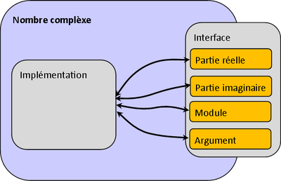
Concepts de l'orienté objet - l'héritage
Héritage : principe autorisant le création d'une classe dérivée à partir d'une classe existante
- Attributs et méthodes de la classe existante transmis à la classe dérivée
- Classe mère / classe fille
- Principe encourageant la réutilisation
Exemple d'héritage
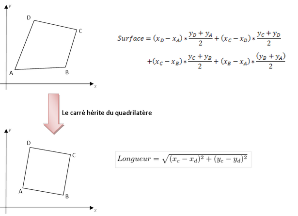
Concepts de l'orienté objet - le polymorphisme
Polymorphisme : faculté de pouvoir redéfinir dans une classe dérivée les méthodes héritées de la classe parente
- Permet une programmation plus générique
- Dans le cas de l’héritage : spécifier un comportement général
Exemple de polymorphisme
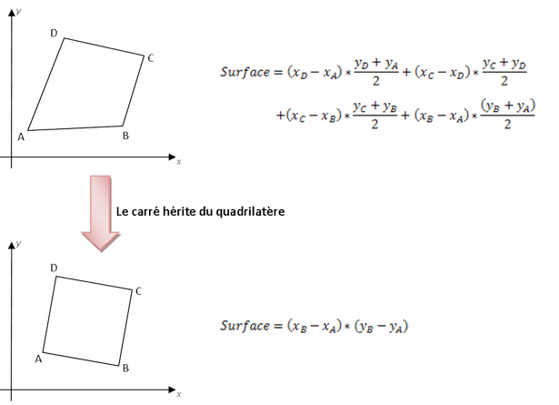
Modélisation orienté objet
- En résumé, l'approche objet c'est :
- objets, classes, encapsulation, héritage, polymorphisme
- des facilités pour faire évoluer les programmes
- Mais :
- pas toujours très intuitif
- quelle représentation pour ces structures/concepts ?
Présentation d'UML
Naissance d'un langage de modélisation
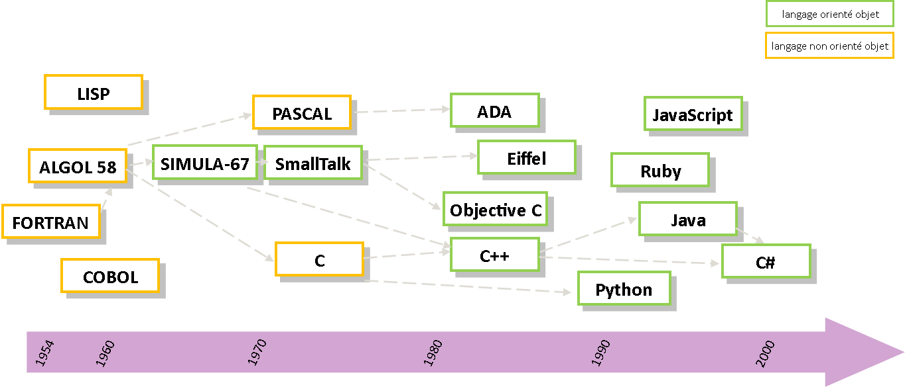
Naissance d'un langage de modélisation

Généralités
- Langage graphique de conception orienté objet
- Couvre l'intégralité des systèmes informatiques
- utilisation, conception, déploiement
- Compréhensible par l'homme et par la machine
- Standard largement adopté par l'industrie
Les diagrammes UML
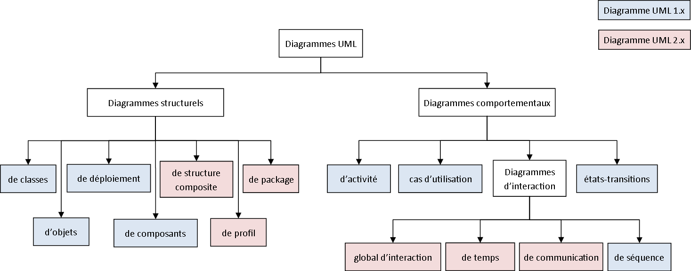
Les diagrammes UML
- 14 diagrammes en version 2.5
- 7 diagrammes struturels : composants du système et fonctionnalités permises
- 7 diagrammes comportementaux : intéractions entre les éléments d'un système
UML
- En résumé, UML c'est :
- un langage graphique de conception orientée objet
- contitué de diagrammes accompagnés d'explications
- pas une méthode
Le diagramme de cas d'utilisation
Le diagramme de cas d'utilisation
- Structurer le besoin de l'utilisateur
- Représentation des attentes de l'utilisateur
- Définition du périmètre de l'application (=frontière)
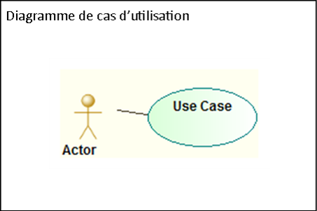
Le cas d'utilisation
- Action (=> verbe à l'infinif)
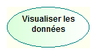
- Structuration possible en sous-cas d'utilisation
- inclusion = obligatoire
- extension = optionnel
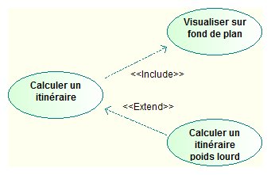
Les acteurs
- Personne ou système en interaction avec le système
- Identifié
- 2 catégories :
- acteur principal : exprime une attente vis à vis du système
- acteur secondaire : est sollicité par le système
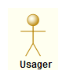
Les acteurs
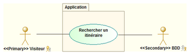
Liens entre acteurs
- La généralisation
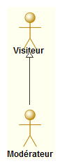
Exemple
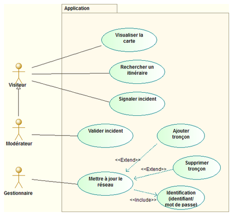
Description textuelle
- Nécessaire pour
- Détailler un cas d'utilisation (entrées/sorties...)
- Préciser une chronologie
- Comprend
- Identification : nom, objectif, acteurs, dates, responsable
- Description : pré-condition, scénario, post-conditions
- Spécifications non fonctionnelles
Exercices
- 1. 1.
Le diagramme de classes
Diagramme de classes
- Représenter les structures de données
- classes et liens entre classes...
- mise en oeuvre des concepts de l'orienté objet
- modélisation statique
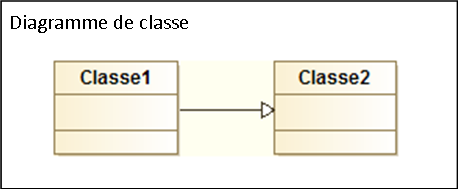
Elements de bases
- La classe = structure de données abstraite
- nom (au singulier)
- attributs
- méthodes
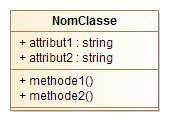
- L'association
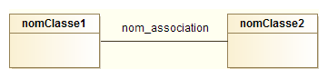
Les attributs
- Visibilité : public (
+), privé (-), protégé (#) - Type :
integer,float,string,date,boolean, ... - Multiplicité :
[2],[3],[*]... - Valeur par défaut :
=valeur_par_defaut - Attribut dérivé =
Les attributs dérivés
- Dont la valeur dépend des autres attributs
- pas d'affectation
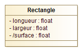
Les méthodes
- Signature d'une méthode
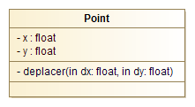
Les associations
- Types d'associations
- association (simple)
- héritage
- agrégation
- composition
- Cardinalité :
0..11*1..*M..NN
L'association simple
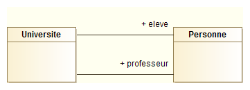
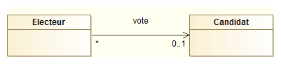
L'héritage
- Concept orienté objet du même nom
- Attributs et méthodes automatiquement transmis à la classe fille
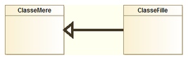
Exemples d'héritage
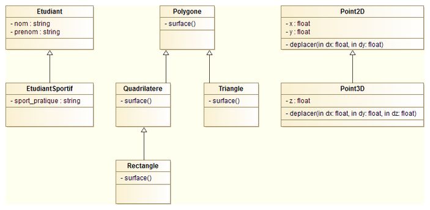
Agrégation-composition
- Composition = agrégation forte
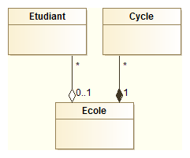
Les classes associations
- Classe avec des informations sur une association
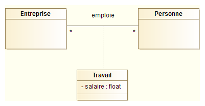
Les classes abstraites
- Classe qui ne peut être instanciée
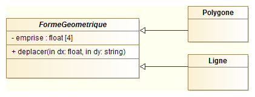
Exercice
1. 1. 1.
Le diagramme d'objets
Le diagramme d'objets
- Représenter les objets du système à un instant donné
- illustrer le diagramme de classe
- détailler un aspect particulier
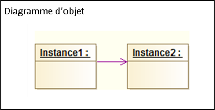
Les objets
- Objet = instance de classe
- Nom de l'objet souligné :
nom_objet:NomClasse - Attributs avec une valeur :
attribut: type = valeur - Méthodes non représentées
- Nom de l'objet souligné :
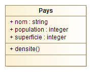
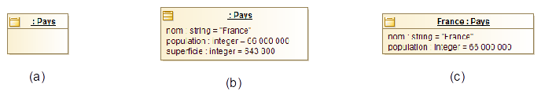
Les liens
- Lien = instance d'association
- Liens simples uniquement
- Pas d'héritage
- Cardinalité de
1toujours - Nom du lien souligné
Exemple
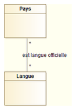
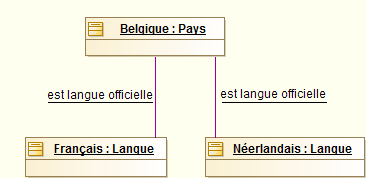
Exemple
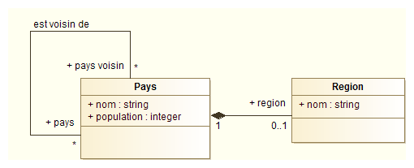
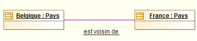
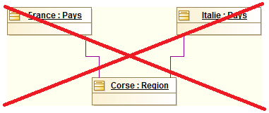
Exercices
Le diagramme de paquetage
Le diagramme de paquetage
- Représenter l'organisation en paquetages
- paquetage = ensemble d'éléments UML fournissant un service cohérent
- utile pour structurer les gros projets
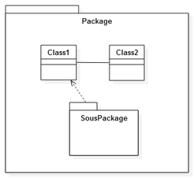
Dépendances entre paquetages
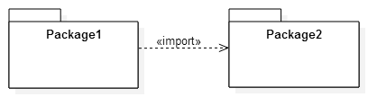
Exemple
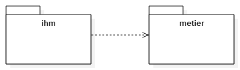
Exemple
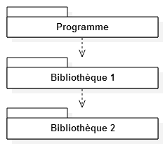
Le diagramme de déploiement
Diagramme de déploiement
- Décrire la configuration physique des matériels
- répartition des composants
- interractions entre noeuds
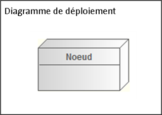
Noeuds et composants
- Noeud = élément physique du système
- Composant = unité logicielle autonome
- diagramme de composant : vue de haut niveau sur un système
- Artifact = fichier présent sur un noeud et matérialisant la présence d'un composant
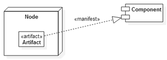
Exercice
- Station météo
Le diagramme d'activité
Diagramme d'activité
- Décrire les enchaînements d'actions lors d'une fonctionnalité importante
- un cas d'utilisation
- une méthode importante
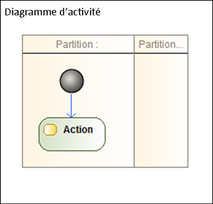
Eléments de base
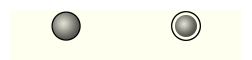
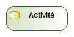
Branchement conditionnel
- Activités dépendantes du résultat d'un test
Transitions concurrentes
- Activités effectuées en parallèle
- Join = séparation de branches d'activités
- Fork = resynchronisation des branches d'activités
Exemple
Exemple
Couloir d'activités
Exercice
- Mousse au chocolat
- GPS de navigation
Le diagramme de séquence
Diagramme de séquence
- Décrire les interactions entre entités lors d'une fonctionnalité importante
- un cas d'utilisation
- une méthode importante
Activation des objets
- Axe du temps du haut vers le bas
- Ligne de vie des objets
- périodes d'activation
Echanges de messages
- Flux de données échangés
- envoi d'un message =appel de méthode
- réponse =retour de méthodes
- numérotation optionnelle des messages échangés
- Types de messages :
- synchrone : attente d'une réponse
- asynchrone : pas de réponse/retour
- de retour : valeur renvoyée suite à message synchrone
- création / destruction
Types de messages
Cadre d'interaction
- Partie du diagramme associée à une modalité d'exécution
opt: condition de test (si en programmation)alt: plusieurs conditions de test (si / sinon si...)loop: répétition d'un échange de messagespar: fragments exécutés en parallèleref: passage par un autre diagramme de séquence
Exemple
Exercice
- Correspondance diagramme de classes / diagramme de séquence
Le diagramme d'états-transitions
Diagramme d'états-transitions
- Représenter les états possibles d'un objet et les transitions entre eux
- utile lorsque l'état d'un objet dépend de son hitorique
- symbolique proche de celle du diagramme d'activité
Etats et transitions
- Etat stable
- Transition instantannée
Conditions de garde
- Plusieurs transtions possibles à partir d'un état
Transitions refléxives
- Transition laissant l'objet dans le même état
Exercice
- Démineur
UML et méthodologie
- UML est un langage
Du besoin au code
Qualité d'un logiciel
- Capacité fonctionnelle
- réponse aux besoins explicites et implicites
- Facilité d'utilisation
- ergonomie, gestion des utilisations incorrectes
- Fiabilité
- exactitude des résultats, tolérance aux pannes
- Performance
- temps de réponse, débit
- Maintenabilité
- effort nécessaire pour corriger ou transformer
- Portabilité
- aptitude à fonctionner dans un nouvel environnement
Cycles de développement
Cycles de développement
Méthodes de développement
- Quelques méthodes de développement utilisant UML :
- Le processus unifié (PU, UP, RUP, AUP...)
- La méthode minimale
- La méthode extreme programming (XP)
Le processus unifié
- Basé sur UML
- Guidé par les besoins des utilisateurs
- Centré sur l'architecture logicielle
- Itératif et incrémental
Le processus unifié
- Guidé par les besoins des utilisateurs
- modèles UML dérivés des cas d'utilisation
- Marche à suivre :
- réaliser un ébauche grossière de l'application
- identifier les fonctions essentielles
- adapter l'architecture pour prendre en compte ces fonctionnalités
- tester
- recommencer
- S'y prendre en plusieurs fois et affiner le modèle par étapes
Le processus unifié
eXtreme Programming
- Client maîtrise d'ouvrage
- Livraisons au plus tôt
- Tests de toutes les fonctionnalités
- Amélioration continue de la structure interne
eXtreme Programming
- Programmation
- développement guidés par les tests
- conception simple
- remaniement
- Collaboration
- programmation en binôme
- responsabilité collective du code
- règles de codage
- intégration continue
- Gestion de projet
- Client sur site
- Rythme durable
- Livraisons fréquentes
- Planification itérative
Appartée sur les tests
- Tests unitaires
- écrits éventuellement avant le code
- guider et rythmer la conception
- documenter le code
- Tests fonctionnels
- absence d'anomalie
- fonctionnalités livrées
- = recette